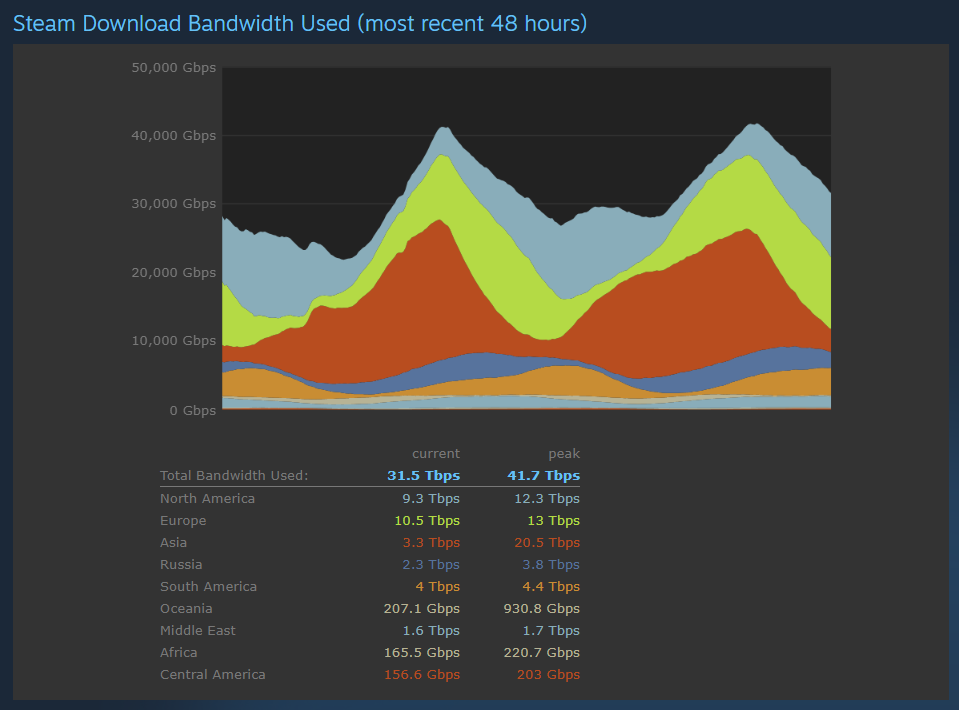
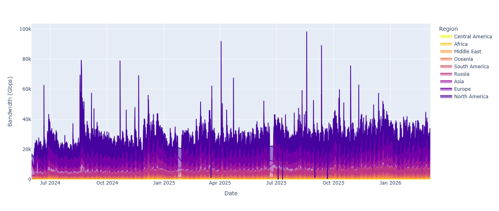

The Steam store website publishes a surprising amount of aggregate data about the platform, including live player counts and global bandwidth usage. While sites like SteamDB and Steam Charts track the former, there doesn't seem to be a public dataset for the latter with long historical coverage. So, in summer 2024, I set out to start curating one myself.

The data behind this chart is loaded dynamically from a JSONP endpoint hosted on a third-party CDN.
Each request returns regional usage at 10-minute granularity, providing a near
real-time view of download traffic across Steam's global infrastructure. However, the dataset comes with
a few quirks. The endpoint only exposes a rolling 48-hour window of observations, and requests include
a cache-busting ?v= parameter that prevents retrieval of historical snapshots. In
practice, this means older data is generally inaccessible unless a stale CDN cache happens to persist
it. As a result, the bandwidth data is fundamentally ephemeral—if it isn't captured in real time,
it effectively disappears.
Since June 20, 2024, I've been running an hourly scraping routine to capture new data points as they become available and append them to a growing CSV file by leveraging/abusing GitHub Actions (a.k.a. the poor man's cron); the source code can be found in my GitHub repository. Not the best practice, but it gets the job done.
To backfill some historical data, I first used the Wayback Machine CDX API to retrieve archived versions of both the stats page and the JSONP endpoint. While I did get some value out of this, the snapshots were often spotty and most of the URLs simply error out. I then stumbled across the work of Christoff Visser and Romain Fontugne of the IIJ Research Lab in Tokyo, Japan, who open-sourced their own dataset of Steam traffic spanning February 2023 to October 2023 with great coverage quality (please check out their paper on Steam's CDN infrastructure, really interesting and they do a cool case study looking at traffic and cache load trends during the release of CS2). Huge thanks to them for making their data available!

I've also released my combined dataset on Kaggle, which updates weekly. Feel free to use it for literally anything. Also please let me know if you have historical data that you'd be willing to share to help fill in the gaps.